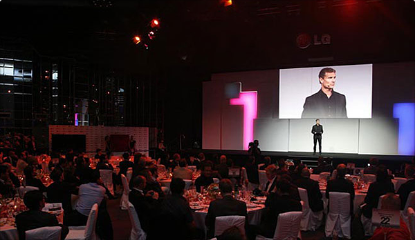

- 55" LG OLED TV amazed IFA 2012!
- Great crowds of media gathered to attend LG Media Day
- LG OLED TV was presented to the public at IFA 2012
- LG OLED TV, even slimmer than mobile phone
- 4mm world's slimmest design of LG OLED TV was finger picked
- LG OLED TV boasted its truly perfect picture quality
 Every audience cannot stop admiring & taking photos
Every audience cannot stop admiring & taking photos- Kids were very excited at LG's 3D video wall
- 3D space content dominated IFA exhibition hall
- The audience couldn't take their eyes off LG's large scale 3D content
- LG OLED TV received big attention
- LG OLED TV as thin as a paper attracted a photographer
- CINEMA 3D multi-screen showed eye-catching 3D content
 Every camera flashed to the LG OLED TV
Every camera flashed to the LG OLED TV- A crowd of people was walked into LG booth
- The audience took a comfortable seat with wearing 3D glasses
- At IFA 2012, LG booth were croweded with media and press
- Huge scale of 3D video wall dominated the audience
- The press and media showed big interest on the new LG OLED TV
- LG OLED TV was in the spotlight the most at IFA 2012
-
Key celebrities are enjoying LG OLED TV's greatest picture quality and slimmest design
-

2012 LG Europe TV PR Convention
-
The press all enjoy watching 3D video
-
LG introduces the brand new 55 inch OLED TV
-
The press give big hands to LG OLED TV
-
 Jean-Jacques Annaud, a French film director introduces LG OLED TV
Jean-Jacques Annaud, a French film director introduces LG OLED TV
-
 Gemma Sandorson, an Australian top model take a pose next to LG OLED TV
Gemma Sandorson, an Australian top model take a pose next to LG OLED TV
-
LG OLED TV achieved the deepest black levels as real as life
-
Key celebrities take pose for the press
-
Jean-Jacques Annaud is explaining how slimmest LG OLED TV is
-
Key celebrities are enjoying LG OLED TV's greatest picture quality and slimmest design
-
Sebastian Vettel, World Champion of F1 introduces LG OLED TV